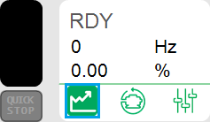
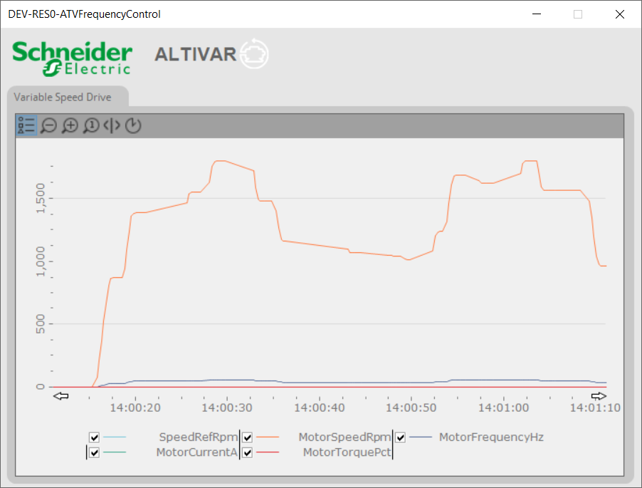

ATVFrequencyControl - fpDriveTrend provides a graphical representation of the various Drive parameter values.
You can monitor and observe the values of various drive parameters such as Motor speed, Motor frequency, Motor current and Motor torque.
Usage
You can access the ATVFrequencyControl - fpDriveTrend faceplate, when you click on the corresponding active zone in the ATVFrequencyControl - sDrive.
Faceplate Components
The figure below illustrates the ATVFrequencyControl - fpDriveTrend faceplate:


Click and select the following parameters to observe and monitor their values in the graphical representation:
Motor Speed RPM
Motor Speed-Ref RPM
Motor Frequency Hz
Motor Current A
Motor Torque Pct